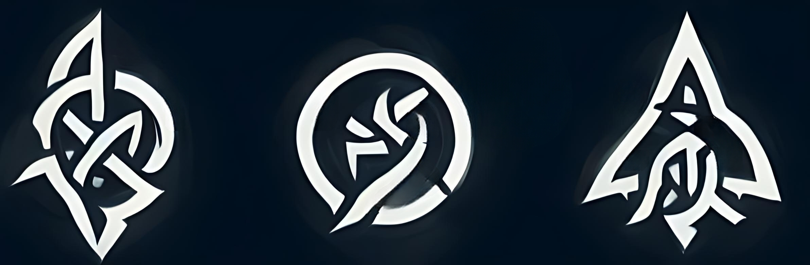

The three symbols of the Mystic Knight Order. Read left to right: life, purity, freedom.
Recite, once again, the Mystic Virtues, and let your life reflect their words...
Speak the words of your creator.
He who forged us as leaders:
Value life, purity, and freedom.
Seek a clear mind that can protect others.
Avoid abandonment of duties and murder.
And most importantly,
be thankful for the breath in your lungs,
and the power flowing through your veins.
About
Mystic Knights were the protectors of Azasos bestowed with blessings from Aaris. They followed his ways and based the Virtues they recite on his words and actions. They rely on training with both practical combat skills and magic to make them capable warriors and protectors of the peoples of Azasos. They were prized fighters in the Battle for Azasos that eventually led to the banishment of Ahameous, the God of Evil.
The Circle
A group of 12 mystic knights that, at the Order's full strength, were the leaders of it. All were the most experienced and powerful Navizar the Order had to offer. They made decisions for the Order and had the authority to make changes in the Order's operations. When Aaris was still on Azasos, they kept the Order loyal to him. After Aaris left, they followed the leadership of Caelora's monarch. Eventually, right before the Order's destruction, they were following the Keltris line, which the High King apparently ended. (However, the heir to the throne, Gaelin Keltris, is still alive, and was protected by one of the past Circle members.)
Weapons of the Order
Mystic Knights use a variety of weapons, but all choose one weapon that they seek to master. Each one eventually chooses one of the four "pure"
Mystic Knight weapons. All of the weapons are intended to be used without a shield because their magic makes them useless to a Mystic Knight. All
of the weapons have a few forms that are primarily taught to students of the four weapons; learning these forms can give the Mystic Knight focus in
their fighting and allows them to draw on something familiar in the heat of battle.
Longsword: the most prominent weapon used by Mystic Knights. It is what makes up all the twelve swords of power that are used by the members of the Circle.
Rapier: a weapon used by a large number of Mystic Knights.
Great sword: a weapon that is used only by a few Mystic Knights, and is mastered by even fewer. Using their powers to assist them, a great sword wielder can be devastating on the battlefield if well-trained.
Spear: the last of the Mystic Knight weapons. It is used by a small group of Mystic Knights, but a group that is larger than great sword-wielders.
Brief History
The Mystic Knight Order was founded by Aaris (the Creator) to protect Azasos. The Order's headquarters was in A'Anlon, the first capital of Azasos. Once the Queen of Azasos was assassinated, the Order moved away from the global stage and instead focused its efforts on Caelora. This eventually leads to the Order becoming ingrained into Caelora's government. The Order was disbanded after the High King of Southern Caelora conquered Northern Caelora and "united" the country after a civil war. Some members remained in hiding and taught others the ways of the Order.